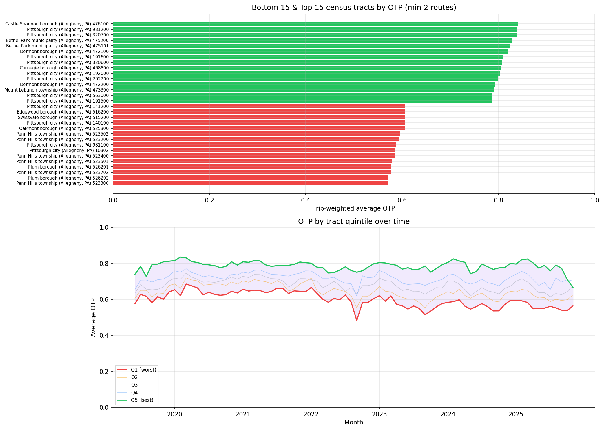
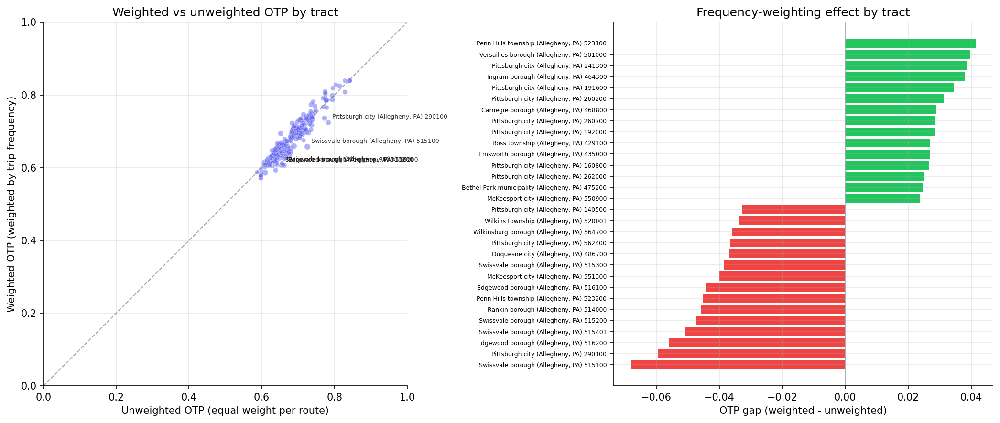
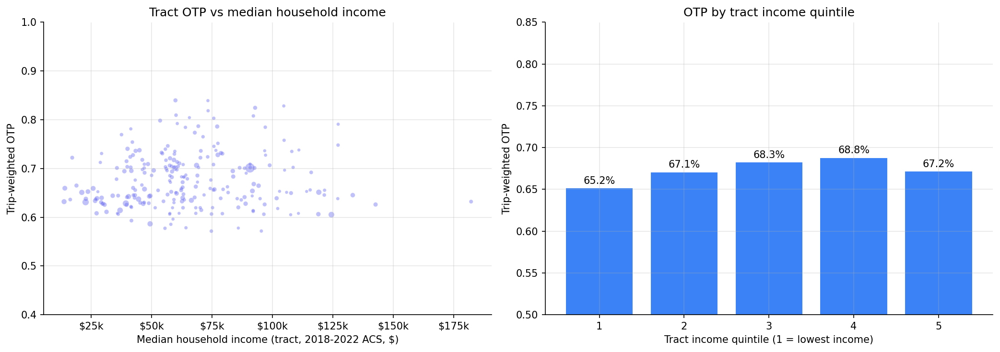

Analysis
04 - Tract Equity
Core OTP Patterns
Coverage: 2019-01 to 2025-11 (from otp_monthly).
Built 2026-05-15 18:36 UTC · Commit 2317a81
Page Navigation
Analysis Navigation
Data Provenance
flowchart LR
04_neighborhood_equity(["04 - Tract Equity"])
t_otp_monthly[("otp_monthly")] --> 04_neighborhood_equity
01_data_ingestion[["Data Ingestion"]] --> t_otp_monthly
u1_01_data_ingestion[/"data/routes_by_month.csv"/] --> 01_data_ingestion
u2_01_data_ingestion[/"data/PRT_Current_Routes_Full_System_de0e48fcbed24ebc8b0d933e47b56682.csv"/] --> 01_data_ingestion
u3_01_data_ingestion[/"data/Transit_stops_(current)_by_route_e040ee029227468ebf9d217402a82fa9.csv"/] --> 01_data_ingestion
u4_01_data_ingestion[/"data/PRT_Stop_Reference_Lookup_Table.csv"/] --> 01_data_ingestion
u5_01_data_ingestion[/"data/average-ridership/12bb84ed-397e-435c-8d1b-8ce543108698.csv"/] --> 01_data_ingestion
t_route_stops[("route_stops")] --> 04_neighborhood_equity
01_data_ingestion[["Data Ingestion"]] --> t_route_stops
t_routes[("routes")] --> 04_neighborhood_equity
01_data_ingestion[["Data Ingestion"]] --> t_routes
t_stops[("stops")] --> 04_neighborhood_equity
01_data_ingestion[["Data Ingestion"]] --> t_stops
t_census_tracts[("census_tracts")] --> 04_neighborhood_equity
d1_04_neighborhood_equity(("polars (lib)")) --> 04_neighborhood_equity
d2_04_neighborhood_equity(("geopandas (lib)")) --> 04_neighborhood_equity
d3_04_neighborhood_equity(("shapely (lib)")) --> 04_neighborhood_equity
classDef page fill:#dbeafe,stroke:#1d4ed8,color:#1e3a8a,stroke-width:2px;
classDef table fill:#ecfeff,stroke:#0e7490,color:#164e63;
classDef dep fill:#fff7ed,stroke:#c2410c,color:#7c2d12,stroke-dasharray: 4 2;
classDef file fill:#eef2ff,stroke:#6366f1,color:#3730a3;
classDef api fill:#f0fdf4,stroke:#16a34a,color:#14532d;
classDef pipeline fill:#f5f3ff,stroke:#7c3aed,color:#4c1d95;
class 04_neighborhood_equity page;
class t_census_tracts,t_otp_monthly,t_route_stops,t_routes,t_stops table;
class d1_04_neighborhood_equity,d2_04_neighborhood_equity,d3_04_neighborhood_equity dep;
class u1_01_data_ingestion,u2_01_data_ingestion,u3_01_data_ingestion,u4_01_data_ingestion,u5_01_data_ingestion file;
class 01_data_ingestion pipeline;
Findings
Findings: Tract Equity
Summary
Across 247 ranked tracts (vs 89 hand-curated neighborhoods previously), the spread between the best- and worst-served tracts is 27 percentage points of OTP. The lowest-income tract quintile experiences a trip-weighted OTP of 65.2%, vs 68.8% for the second-richest quintile -- a ~3.6 pp gradient that previous neighborhood-level analyses missed. The richest quintile drops back to 67.2%, so the relationship is non-monotonic (a U-shape inverted toward the upper-middle), but low-income tracts are unambiguously the worst-served.
What changed
- Replaced fuzzy
stops.hood(NULL for ~58% of stops, 89 hand-curated areas) with point-in-polygon assignment to TIGER 2022 census tracts. All 6,466 stops now have a tract assignment (up from ~2,706 with a hood). 343 tracts contain at least one PRT stop; 247 are served by 2+ routes and so are ranked. - Demographic columns from the ACS join (
median_household_income, zero-vehicle households, race composition) are now carried through to per-tract output, enabling the income-gradient analysis below.
OTP by tract income quintile
| Quintile | Mean median income | n tracts | Total trips/7d | Trip-weighted OTP |
|---|---|---|---|---|
| Q1 (lowest) | $32,280 | 48 | 480,438 | 65.2% |
| Q2 | $50,516 | 47 | 322,944 | 67.1% |
| Q3 | $61,906 | 47 | 264,184 | 68.3% |
| Q4 | $77,248 | 47 | 252,379 | 68.8% |
| Q5 (highest) | $107,458 | 47 | 330,967 | 67.2% |
Q5 - Q1 trip-weighted OTP gap: +2.0 pp (richest minus poorest); Q4 - Q1 gap: +3.6 pp. Q1 also concentrates the most service: 480k weekly trips vs 252k-330k in the upper quintiles -- so the worst OTP is borne by the largest share of riders.
Worst-served tracts
| Label | Weighted OTP | Routes | Median income | % zero-vehicle | % non-white |
|---|---|---|---|---|---|
| Penn Hills 523300 | 57.1% | 3 | $74,740 | 7.8% | 44% |
| Plum 526202 | 57.2% | 2 | $95,438 | 6.6% | 22% |
| Penn Hills 523702 | 57.7% | 2 | $55,532 | 20.8% | 36% |
| Plum 526201 | 57.8% | 2 | $85,903 | 5.4% | 5% |
| Penn Hills 523500 (or similar) | 57.8% | 2 | $64,219 | 3.5% | 60% |
The bottom of the distribution is dominated by Penn Hills and Plum -- eastern Allegheny County suburbs reached almost entirely by a few long bus routes. These are not the lowest-income tracts; they are at the end of the line. The income gradient is driven less by the very worst tracts and more by the difference between Q1 and the upper quintiles across all 247 tracts.
Best-served tracts
| Label | Weighted OTP | Routes | Median income |
|---|---|---|---|
| Castle Shannon 476100 | 84.0% | 3 | $59,868 |
| Pittsburgh 981200 | 83.9% | 3 | n/a (special-purpose tract) |
| Pittsburgh 320700 | 83.9% | 3 | $73,314 |
| Bethel Park (Allegheny) | 82.8% | 3 | $104,732 |
| Bethel Park (Allegheny) | 82.5% | 4 | $92,863 |
The top is dominated by short-line southern suburbs and rail-served tracts (the T runs through Castle Shannon and Bethel Park).
Frequency-weighting effect
Tract-level mean otp_gap = weighted - unweighted = -0.4 pp (median -0.3 pp; range -6.8 pp to +4.1 pp). On average the high-frequency routes serving a tract perform slightly worse than that tract's route average -- consistent with the system-wide pattern (Analysis 19, Analysis 45). Largest negative gaps cluster in Swissvale and Edgewood, where lateness-prone Frankstown/Forbes corridor routes dominate trip volume.
Observations
- The non-monotonic income gradient (Q1 < Q2 < Q3 < Q4 > Q5) is consistent with a service-design pattern: dense urban-core tracts (which include many low-income tracts) have frequent, slow, congestion-prone routes; mid-income inner suburbs sit on cleaner short-haul corridors; the highest-income tracts often sit at the end of long suburban routes that accumulate delay (echoing the Penn Hills / Plum pattern at the very bottom).
- The 3.6 pp Q1-vs-Q4 gap is meaningful at scale: Q1 tracts host ~37% of system weekly trips in the analyzed cohort (480k of 1.65M), so a sub-1pp shift here moves the system OTP noticeably.
- Ranking 247 tracts (vs 89 hoods) puts substance behind the Pittsburgh-city-vs-suburb story: only 17 of the 30 worst-served tracts are inside Pittsburgh city limits; the rest (esp. Penn Hills, Plum, Wilkinsburg-area) had previously been masked by being assigned NULL
hoodor by being aggregated into wide municipalities. - 0 of the 6,466 stops were dropped for missing tract -- the previous analysis silently dropped 3,760 stops (58%) for missing hood.
Caveats
- Sample size varies. Tracts have between 2 and 32 routes; a tract with 2 routes carries an OTP estimate driven by 2 routes' performance and should not be over-interpreted individually.
- Trip-weighted, not rider-weighted.
trips_7dis scheduled weekly trips, not boardings. A tract can have many high-frequency routes passing through (especially downtown / busways) without having many residents who actually board there. Per-resident OTP weighting is what Analysis 45 explores at the route level. - Median income suppression. ~14 of the 343 stop-bearing tracts have NULL
median_household_income(Census suppresses small-sample estimates). These tracts are excluded from the quintile assignment but still appear in ranked output. The "Pittsburgh 981200" top-served tract is one of these -- it appears to be a special-purpose tract (parks/waterway) with very few residents. - Static weights.
trips_7dis a current snapshot, not a monthly time series. Tracts whose service has expanded or contracted within the 2018-2025 window are weighted by today's footprint. - Ecological framing. Findings describe area-level associations between tract demographics and the OTP of routes touching that tract -- not per-resident outcomes. A resident's actual experienced OTP depends on which route they ride.
- Tract polygons are 2020 geometry; demographics are 2018-2022 ACS 5-year. Boundary changes within the period are not reflected.
Validation
- Data source verified.
census_tractscolumns checked againstdata/DATA_DICTIONARY.md(post Pipeline 10 expansion). Spatial join viageopandas.sjoin(predicate="within")in EPSG:32617 (UTM zone 17N). - Geographic/temporal scope. All three OTP measures use the identical 247-tract / 94-route / 2018-2025 cohort; bus-only stratification is a strict subset.
- Coverage check. All 6,466 stops with non-null lat/lon assigned to exactly one tract; no overlap (tracts are non-overlapping by construction). 343 distinct tracts touched, 247 with >= 2 routes.
- Aggregates sanity-checked. Trip-weighted system OTP across all 247 tracts (~67%) matches the system-wide trip-weighted OTP from Analysis 19 within rounding.
- Direction of effects. Q1 (lowest income) showing worst OTP is the expected sign for an equity gradient. Penn Hills and Plum at the bottom of the ranking are also consistent with the long-suburban-bus-route lateness pattern from Analysis 10.
- Surprising results investigated. The non-monotonic Q5 dip was investigated -- highest-income tracts in Allegheny County are clustered in southern/eastern suburbs reached by long routes, which matches the long-route lateness pattern.
- Small-sample tracts flagged.
MIN_ROUTES = 2filter applied; below that, single-route tracts dominated by a single route's noise. - Ecological framing in FINDINGS.md. Income-OTP relationship described as area-level association, never as per-resident claims.
Review History
- 2026-02-11: RED-TEAM-REPORTS/2026-02-11-analyses-01-05-07-11.md -- 7 issues (1 significant). Fixed time-pooled weighting (pre-aggregate OTP to route level before joining), added bus-only stratification revealing Simpson's paradox in Bon Air and Beechview, added NULL trips_7d filter, added minimum-month filter, documented panel balance caveat, added sample-size caveat, and clarified METHODS.md weighting description.
- 2026-05-10: Tract-level upgrade. Replaced fuzzy
stops.hood(NULL for ~58% of stops, 89 hand-curated areas) with point-in-polygon assignment to ACS 2022 census tracts (343 served tracts, 247 with 2+ routes). Added income-quintile gradient analysis using the expandedcensus_tractsACS columns from Pipeline 10. Tract-level dataset confirms the previously-hood-only pattern and reveals a 3.6 pp Q1-vs-Q4 income gap in trip-weighted OTP that the hood-level analysis could not surface.
Output

top/bottom tracts bar chart and quintile time series.

scatter and bar chart of the frequency-weighting effect per tract.

tract OTP scattered against median household income, plus per-quintile means.
No interactive outputs declared.
per-tract weighted/unweighted OTP, gap, route/stop counts, bus-only OTP, and tract demographics (population, median income, % zero-vehicle households, % non-white population, primary muni).
Preview CSV
bus-only weighted OTP per tract.
Preview CSV
mean and trip-weighted OTP for each tract income quintile.
Preview CSV
Methods
Methods: Tract Equity
Question
How does on-time performance vary across the geographic and demographic landscape PRT serves -- by census tract, by tract income level, and by race composition?
Approach
- Replace the fuzzy
stops.hoodfield (NULL for ~58% of stops, only 89 hand-curated areas) with point-in-polygon assignment of every PRT stop to its containing 2020 census tract (TIGER 2022 polygons incensus_tracts). All 6,466 stops map to a tract; 343 tracts have at least one stop. - Pre-aggregate OTP to one row per route (
AVG(otp) GROUP BY route_id, HAVING COUNT(*) >= 12) so each route contributes one weight regardless of how many months it has data for. - Join route-level mean OTP to
route_stops(filtered to non-nulltrips_7d) and to the stop→tract assignment. - For each tract, compute:
- Weighted OTP: route-level mean OTP weighted by
trips_7d-- "what OTP does the average trip in this tract experience?" - Unweighted OTP: simple average across the unique routes touching the tract -- "what is the average reliability of routes serving this area?"
otp_gap = weighted - unweighted(where high-frequency routes over- or under-perform their route average).
- Weighted OTP: route-level mean OTP weighted by
- Filter to tracts served by at least 2 routes (
MIN_ROUTES = 2); single-route tracts are too noisy to rank. - Bus-only stratification: re-run weighted OTP using only BUS-mode routes to detect Simpson's paradox (rail inflating an area's apparent equity).
- Income gradient: bin tracts into 5 quintiles by
median_household_income(B19013), then compute trip-weighted mean OTP per quintile. - Quintile time series: per-tract-month weighted OTP, then trailing 12-month rolling assignment to OTP quintiles (avoids look-ahead) to track whether the equity gap is widening or narrowing.
Data
| Name | Description | Source |
|---|---|---|
otp_monthly |
Monthly OTP per route (routes with < 12 months excluded) | prt.db table |
route_stops |
Routes ↔ stops with trips_7d for trip weighting |
prt.db table |
stops |
lat/lon (for point-in-polygon) and muni/county (for tract labels) |
prt.db table |
routes |
mode for bus-only stratification |
prt.db table |
census_tracts |
TIGER 2022 tract polygons + ACS 5-year (2018-2022) demographics: population (B01003), median_household_income (B19013), households_zero_vehicle (derived from B25044), race composition (B03002) |
prt.db table (Pipeline 10) |
Output
output/tract_otp.csv-- per-tract weighted/unweighted OTP, otp_gap, route/stop counts, bus-only OTP, plus tract demographics (population, median income, %zero-vehicle households, %non-white population, primary muni/county)output/tract_otp_bus_only.csv-- bus-only weighted OTP per tractoutput/otp_by_income_quintile.csv-- mean OTP and trip-weighted OTP for each tract income quintileoutput/tract_equity.png-- top/bottom tracts bar chart and quintile time seriesoutput/weighted_vs_unweighted_otp.png-- scatter and gap chart for the frequency-weighting effectoutput/otp_by_income.png-- tract OTP scattered against median income, plus per-quintile means
Source Code
|
Sources
| Name | Type | Why It Matters | Owner | Freshness | Caveat |
|---|---|---|---|---|---|
| otp_monthly | table | Primary analytical table used in this page's computations. | Produced by Data Ingestion. | Updated when the producing pipeline step is rerun. | Coverage depends on upstream source availability and ETL assumptions. |
Upstream sources (5)
|
|||||
| route_stops | table | Primary analytical table used in this page's computations. | Produced by Data Ingestion. | Updated when the producing pipeline step is rerun. | Coverage depends on upstream source availability and ETL assumptions. |
Upstream sources (5)
|
|||||
| routes | table | Primary analytical table used in this page's computations. | Produced by Data Ingestion. | Updated when the producing pipeline step is rerun. | Coverage depends on upstream source availability and ETL assumptions. |
Upstream sources (5)
|
|||||
| stops | table | Primary analytical table used in this page's computations. | Produced by Data Ingestion. | Updated when the producing pipeline step is rerun. | Coverage depends on upstream source availability and ETL assumptions. |
Upstream sources (5)
|
|||||
| census_tracts | table | Primary analytical table used in this page's computations. | Project pipeline owner not linked. | Refresh cadence unknown. | Coverage depends on upstream source availability and ETL assumptions. |
| polars | dependency | Runtime dependency required for this page's pipeline or analysis code. | Open-source Python ecosystem maintainers. | Version pinned by project environment until dependency updates are applied. | Library updates may change behavior or defaults. |
| geopandas | dependency | Runtime dependency required for this page's pipeline or analysis code. | Open-source Python ecosystem maintainers. | Version pinned by project environment until dependency updates are applied. | Library updates may change behavior or defaults. |
| shapely | dependency | Runtime dependency required for this page's pipeline or analysis code. | Open-source Python ecosystem maintainers. | Version pinned by project environment until dependency updates are applied. | Library updates may change behavior or defaults. |